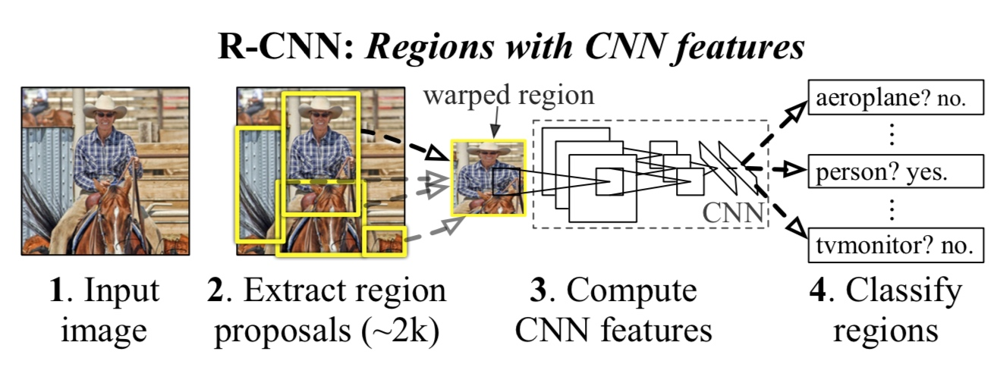

在2012年的ImageNet中，AlexNet拔得头筹。之后，CNN成为了图像识别中的一大利器。
在目标检测中引入CNN，开山之作就是2013年的 Rich feature hierarchies for accurate object detection and semantic segmentation，之后简称R-CNN。
一、R-CNN
1）算法原理
R-CNN中，将目标检测分成两步来实现：
- 首先是生成Region proposals，也就是候选框。有许多的基于图像的低维特征生成候选框的算法，例如selective search等。
- 训练一个分类和回归的网络。这个网络可以根据候选框的区域的图片，判断这个图片的类别，以及它应该回归到的位置。
2）检测过程
这样，在具体的一张图片的目标检测的时候，我们可以通过下面的过程来得到结果：

- 对于给定一张图片，通过算法得到大量的候选框(2k个左右)。
- 将候选框的图片裁剪出，然后输入到CNN网络中。
- 网络的输出为分类的结果和回归的结果。然后我们就知道这个区域是不是目标，如果是，计算出它的回归的位置。
- 得到大量的有类别的框，通过NMS算法，得到最终的目标的框。
3）网络训练
对于目标检测这个任务，我们现有的标注数据其实并不多。所以通常都是使用ImageNet等大的公开的数据进行预训练，或者直接使用预训练好的模型在finetune。
1. 预训练（Supervised pre-training）
这里使用ILSVRC 2012（也就是ImageNet的训练数据集）进行分类任务的CNN网络的预训练。
在我们自己复现论文的时候，可以选择现有的开源模型。在各种框架的Model Zoo中可以方便的下载各种网络的模型。常见的有AlexNet，VGGNet，GoogleNet，ResNet等的模型。据师弟的实验，VGGNet在目标检测中使用的频率最高，效果也最好。
2. 微调（Domain-specific fine-tuning）
之前的模型是用于分类的模型，因此对于VOC中的目标检测并不完全的切合。这里需要再使用VOC的数据进行fine-tuning。
VOC中需要检测的目标共有20种，因此我们的分类任务需要的类别数为21类，其中包含一个背景类。
训练数据使用VOC的数据，首先用Selective search等方法得到候选框，截取候选框的图片。根据候选框和Groundtruth直接的IOU（交比并，通常认为大于0.5就是目标）判断这个候选框是不是目标，如果是目标，再计算出应该的回归值。这里选择的IOU的阈值为0.3。
3. 目标分类器（Object category classifiers）
对每个类别的特征训练SVM。由于训练数据过大，这里使用了难负样本最小化策略。最终的分类按照SVM的输出打分而不是上面的网络的21分类的输出。
通常，我们可以使用CNN的输出表示类别的得分，但有时候为了得到更好地结果，会将最后一个隐含层的输出作为特征，然后给每个类别再训练一个SVM模型。
4. Bounding Box回归
这里使用了每个proposal的最后的卷积的输出（pool5）作为特征，训练了线性回归模型，用来预测新的窗口的位置。
4）个人理解
R-CNN作为目标检测的开山之作，提出了一套目标检测的框架，是两段式的目标检测的代表。相比于传统的目标检测算法，他并不依赖手工设计的特征算子，而是通过CNN这一工具完成特征提取和分类回归的任务。
当然，R-CNN的缺点也很明显。首先是，速度慢。由于一张图片可以提取大量的候选框（~2K），每个候选框都要通过网络进行前馈，这样造成大量的计算量。其次是训练的过程需要人工的处理数据，相比于之后的目标检测的方法，并不是十分的方便。